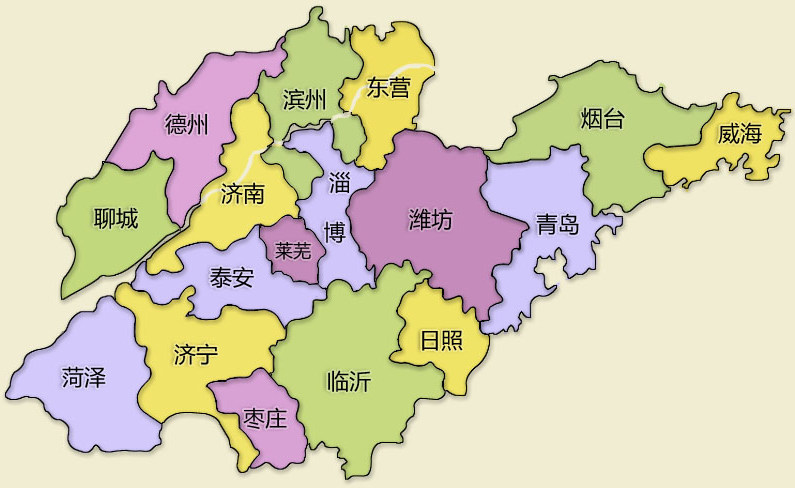

- 丰台 -> 青岛北 (Z349[6.4 22:50~09:48, 11小时硬卧] [￥207x2])
6.5: 五四广场 —— 奥帆中心 —— 情人坝
6.6: 第一海水浴场 —— 啤酒博物馆 —— 台东步行街
6.7: 栈桥景区 —— 天主教堂 —— 青岛北站
- 青岛北 -> 大明湖(Z170[6.7 14:33~17:34, 3小时硬座][￥53.5x2])
6.7: 休息,逛吃逛喝
6.8: 趵突泉——五龙潭——大明湖——芙蓉街
6.9: 千佛山——山东博物馆——山东美术馆
6.10: 上午休息 —— 济南站
- 济南 -> 泰山(K8251[6.10 15:17~16:04, 1小时硬座][￥12.5x2])
6.10: 下午爬泰山
6.11: 清晨看日出 —— 回去休息 —— 泰安站
-
泰安 -> 北京(G118[6.11 13:50~15:47, 2小时高铁][￥223x2])
6.11: 下午到校
